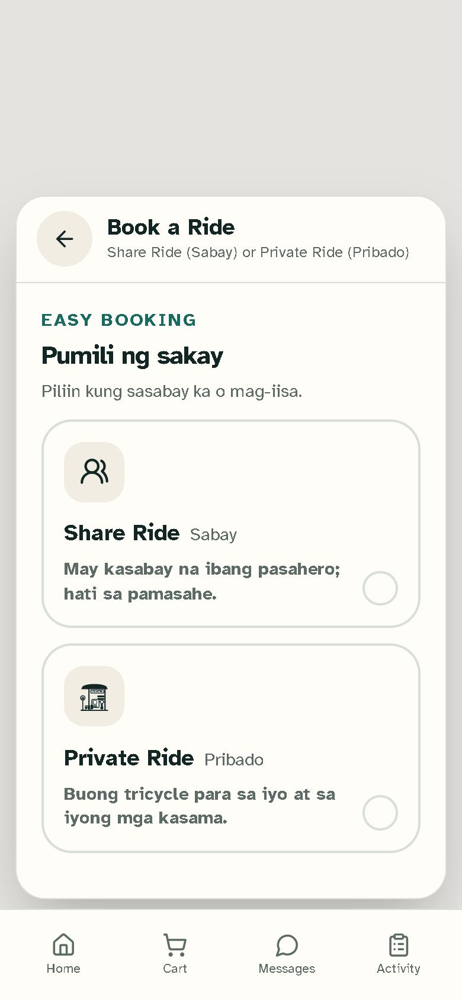

Mag-sign up gamit ang iyong email at numero ng telepono. I-verify ang email, pagkatapos ay mag-sign in para mag-book ng biyahe at umorder ng pagkain.
Approval: hindi kailangan para sa karaniwang customer access.GEN. T. DE LEON · PARA SA KOMUNIDAD
Mas madali ang
araw-araw na biyahe.
Gabay sa pag-book ng tricycle, pag-order ng pagkain mula sa mga lokal na negosyo, at pamamahala ng iyong TrikeServe account.
Tingnan ang gabayGABAY SA GUMAGAMITPARA SA WEB AT MOBILE
UNANG 10 MINUTO
Magsimula sa ilang hakbang
Sundin ang checklist mula pagbukas ng TrikeServe hanggang sa malaman ang susunod mong gagawin.
- 1 minPiliin ang tamang role
Tingnan ang gabay sa account: Customer para sa biyahe o pagkain; Driver o Negosyo kung mag-a-apply sa mga role na iyon; Tagapangasiwa lamang kung itinalaga sa iyo ang access.
- 2 minBuksan ang TrikeServe at gumawa ng account
Piliin ang Mag-sign up, ilagay ang email na nabubuksan mo, gumawa ng password, at piliin ang katugmang uri ng account.
- 3 minI-verify ang email at mag-sign in
Tingnan ang Inbox at Spam/Junk para sa verification message. Kung wala ito, tingnan ang tulong sa pag-verify ng email.
- 2 minPahintulutan ang lokasyon kung kailangan
Pahintulutan ang location access para sa mapa at mga kalapit na opsyon, o ilagay nang mano-mano ang lokasyon kung may ganitong opsyon sa screen.
- 2 minBuksan ang gabay para sa iyong role
Pumunta sa gabay ng Customer, Driver, Negosyo, o Tagapangasiwa. Kailangan ng approval para sa Driver at Negosyo.
Handa ka na bang sumubok?
Maaaring sundan ng Customer ang pag-book ng biyahe o pag-order ng pagkain. Suriing mabuti ang lokasyon at kabuuang halaga bago ipadala ang request.
BAGO MAG-SIGN UP
Aling account ang kailangan ko?
Piliin ang account ayon sa gagawin mo sa TrikeServe.
Gusto kong mag-book ng biyahe o umorder ng pagkainPiliin ang Customer. Karaniwang account ito para sa pasahero at umo-order sa mga lokal na tindahan.Pumunta sa gabay ng Customer
Gusto kong magmanehoPiliin ang Driver. Kailangan ng pag-apruba ng TrikeServe admin ang mga driver account.Pumunta sa gabay ng Driver
May lokal akong negosyoPiliin ang Negosyo para ilista ang iyong tindahan at pamahalaan ang mga order ng pagkain. Kailangan ng pag-apruba.Pumunta sa gabay ng Negosyo
MABILISANG SIMULA
Sa isang tingin
Mga link papunta sa karaniwang gawain.
IYONG ACCOUNT
Mag-sign in o mag-sign up
Gumawa ng tamang uri ng account bago mag-book, magmaneho, o mamahala ng tindahan.
Magparehistro gamit ang iyong detalye at isumite ang mga kailangang dokumento. Hintayin ang pag-apruba bago tumanggap ng request.
Approval: kailangan ng beripikasyon ng TrikeServe staff.Irehistro ang detalye ng tindahan at ibigay ang kailangang impormasyon. Hintayin ang beripikasyon at pag-apruba.
Approval: kailangan ng beripikasyon ng TrikeServe staff.Itinatalaga ng may-ari ng system ang admin access. Huwag gumawa ng admin account kung hindi ito ipinag-utos sa iyo.
Approval: pinamamahalaan ng may-ari ng system ang access.Kaligtasan ng account
Huwag ibahagi ang iyong password o verification code. Hindi hihilingin ng TrikeServe staff na ipadala ang mga ito sa chat.
Mag-book ng tricycle ride
- 1Buksan ang ride screen
Mag-sign in gamit ang Customer account at piliin ang opsyon para sa biyahe.
- 2Ilagay ang pickup at destinasyon
Kumpirmahin ang pickup pin at destinasyon. Tingnan kung tama ang lokasyon bago magpatuloy.
- 3Suriin ang pamasahe at request
Suriin ang pamasahe at detalye ng biyahe bago ipadala ang request. Hintayin ang driver na tumanggap nito.
- 4Makipagkita sa driver
Kumpirmahin sa app ang detalye ng driver at tricycle bago simulan ang biyahe.


Umorder ng pagkain mula sa lokal na negosyo
- 1Maghanap ng kalapit na tindahan
Buksan ang food ordering at tingnan ang mga lokal na negosyong available.
- 2Pumili ng mga item
Suriin ang paglalarawan at presyo ng bawat item. Idagdag sa cart ang gusto mo.
- 3Suriin ang order
Kumpirmahin ang dami, detalye ng delivery o pickup, at kabuuang halaga bago ipadala ang order.
- 4Subaybayan ang update
Tingnan ang status ng order sa app. Makipag-ugnayan sa tindahan o driver gamit ang mga available na feature kung kailangan.
Bago mag-online
- 1Kumpletuhin ang beripikasyon
Isumite ang kailangang impormasyon at hintayin ang pag-apruba ng TrikeServe staff.
- 2Suriin ang iyong profile
Kumpirmahin ang numero ng telepono, detalye ng sasakyan, at nakatalagang terminal.
- 3Itakda ang availability
Gamitin ang driver dashboard para mag-online kapag handa ka nang tumanggap ng request.
Paghawak ng mga request
- 1Suriin ang mga detalye
Tingnan ang pickup, destinasyon o detalye ng delivery, at pamasahe o order na ipinapakita.
- 2Tanggapin lamang kung handa
Tanggapin ang request na kaya mong kumpletuhin. I-update ang customer habang nagpapatuloy ang biyahe o delivery.
- 3Kumpletuhin ang gawain sa app
Sundin ang mga status step sa app at kumpirmahin ang pagkumpleto kapag tapos na ang biyahe o delivery.
I-set up ang tindahan
- 1Kumpletuhin ang beripikasyon ng negosyo
Ibigay ang tamang impormasyon ng negosyo at hintayin ang pag-apruba ng admin.
- 2Suriin ang profile ng tindahan
Tingnan ang pangalan ng negosyo, lokasyon, oras ng bukas, at detalye sa pakikipag-ugnayan.
- 3Magdagdag at magpanatili ng mga item sa menu
Gumamit ng malinaw na pangalan, paglalarawan, presyo, at larawan kung mayroon. I-update ang mga item na hindi available.
Magproseso ng mga order
- 1Suriin ang bawat order
Tingnan ang mga item, dami, note, at detalye ng delivery o pickup bago tanggapin.
- 2I-update ang status ng order
Gamitin ang mga status option sa dashboard para malaman ng customer ang nangyayari.
- 3Ayusin ang handoff
Ihanda ang order at makipag-ugnayan sa driver o customer gamit ang mga available na feature.
Mga pangunahing gawain ng admin
- 1Suriin ang mga nakabinbing registration
Tingnan ang detalye ng account at kailangang dokumento bago aprubahan o tanggihan ang request.
- 2Pamahalaan ang mga user at role
Gamitin ang admin dashboard para suriin ang status ng account at gumawa lamang ng awtorisadong pagbabago.
- 3Subaybayan ang mga biyahe at order
Suriin ang operasyon at tugunan ang mga isyung iniulat ng customer, driver, o negosyo.
- 4Protektahan ang data ng account
Gumamit ng matibay na password, huwag magbahagi ng admin access, at mag-sign out sa shared device.
PAG-TRoubleshoot
Mga karaniwang isyu
Subukan ang mga ito bago makipag-ugnayan sa support.
Hindi ako makapag-sign in
Tingnan ang email at password, kumpirmahing na-verify ang email, at tiyaking aprubado ang account kung Driver o Negosyo ang role.
Hindi ko natanggap ang verification email
Tingnan ang Spam/Junk at kumpirmahing tama ang email address. Kung wala pa rin, makipag-ugnayan sa TrikeServe support.
Mali ang ipinapakitang lokasyon ko
I-enable ang location permission sa browser o device, tingnan ang internet connection, at ayusin ang map pin kung maaari.
Hindi ko makita ang ride o food option
Kumpirmahing naka-sign in ka gamit ang Customer account. Maaaring nakadepende ang mga opsyon sa lokasyon at kasalukuyang availability.
Mukhang mali ang status ng order o biyahe
I-refresh ang screen, tingnan kung may bagong update, at makipag-ugnayan sa support kasama ang reference details kung hindi pa rin maayos.
FAQ
Mga madalas itanong
Mabilisang sagot tungkol sa paggamit ng TrikeServe.
Available ba ang TrikeServe sa lahat ng lugar?
Para sa komunidad ng Gen. T. de Leon ang serbisyo. Ipapakita ng app ang mga opsyong available sa iyong lokasyon.
Magagamit ko ba ang iisang account sa lahat ng role?
Gamitin ang role na nakatalaga sa iyong account. Kailangan ng tamang registration at pag-apruba para sa Driver at Negosyo.
Paano ako hihingi ng tulong sa agarang isyu sa kaligtasan?
Gamitin ang lokal na emergency services kung may agarang panganib. Para sa app support, gamitin ang contact details na ibinigay ng TrikeServe.
Kailangan pa ng tulong?
Makipag-ugnayan sa TrikeServe team gamit ang support option sa app o sa lokal na administrator. Isama ang screen, oras, at maikling paglalarawan ng nangyari. Huwag ipadala ang iyong password o verification code.